AUDIO WATERMARK: Dynamic and Harmless Watermark for Black-box Voice Dataset Copyright Protection
Abstract:Many open-sourced audio datasets require that they can only be adopted for academic or educational purposes, yet there is currently no effective method to ensure compliance with these conditions. Ideally, the dataset owner can apply a watermark to their dataset, enabling them to identify any model that utilizes the watermarked data. While traditional backdoor-based approaches can achieve this objective, they present significant drawbacks: 1) they introduce harmful backdoors into the model; 2) they are ineffective with black-box models; 3) they compromise audio quality; 4) they are easily detectable due to their static backdoor patterns. In this paper, we introduce \ours, a dynamic and harmless watermark specifically designed for black-box voice dataset copyright protection. The dynamism of the watermark is achieved through a style-transfer generative model and random reference style patterns; its harmlessness is ensured by utilizing an out-of-domain (OOD) feature, which allows the watermark to be correctly recognized by the watermarked model without altering the ground truth label. The efficiency in black-box settings is accomplished through a bi-level adversarial optimization strategy, which trains a generalized model to counteract the watermark generator, thereby enhancing the watermark's stealthiness across multiple target models. We evaluate our watermark across 2 voice datasets and 10 speaker recognition models, comparing it with 10 existing protections and testing it in 8 attack scenarios. Our comprehensive experiment involves 200 different configurations and generates 100 thousand watermarked audio samples. Ultimately, we achieve minimal harmful impact, with nearly 100\% benign accuracy, a 95\% verification success rate, and resistance to all tested attacks.
Audio Watermark is a new approach to verify the ownership of the audio dataset using a dynamic and harmless speech watermark. Figure above illustrates the application scenarios of our approach. In the first stage, the dataset owner publishes a speech dataset. We embed a watermark on a portion of the speech samples (e.g., Alice's speech). Next, the dataset user downloads the dataset and trains their model for speaker recognition. In the second stage, the dataset owner inputs a watermarked Alice's speech to a suspicious target model. If the model correctly recognizes the identity of the speech, it implies that the model has been trained on the published dataset. Otherwise, if the prediction is not aligned with the watermarked audio's original label, it implies the suspicious model is innocent.
System Design
Our watermarking system consists of three main components: 1) Offline training of watermark generator; 2) Watermarked dataset generation; 3) Ownership verification.
Offline Train Watermark Generator:
In this phase, dataset protectors focus on training a generative model that applies a watermark to benign input. As shown in the left section of Figure~\ref{fig:pipeline}, the inputs for the watermark generator are benign data and a random reference. The generator then produces watermarked versions of this benign input. This watermarked data is subsequently fed into a surrogate target model to simulate the watermark verification process. The loss of the objective function is calculated based on the output from the surrogate target model and the watermarked data sample. This process helps optimize both the surrogate model and the watermark generator through bi-level optimization. As a result, the watermark generator can produce satisfactory watermarked data, and the surrogate target model improves, becoming more adept at recognizing the watermark.
Generate Watermarked Dataset:
In this stage, the dataset protector aims to build a watermarked dataset with the watermark generator. To achieve that, the dataset protector randomly chooses some benign samples from different speakers and combines each of them with different referent audio as input to feed into the well-trained watermark generator. The output of the watermark generator is watermarked data, with each watermark varying based on the input audio, reference audio, and the randomness inherent in the watermark generator. Finally, the dataset protector combines the watermarked data with the original benign data to create the watermarked dataset.
Ownership Verification:
Given a suspicious model, the ownership verification is to determine whether this suspicious model is trained on the watermarked dataset. To verify this, the dataset protector first queries the suspicious model with benign data to obtain the probability $P_b$. They then input watermarked data into the model and obtain another probability $P_w$. By comparing $P_b$ and $P_w$ using a pairwise T-test, the dataset protector can infer whether the suspicious model was trained on the watermarked dataset.
Key Features
- ✔️ Dynamic Watermark: The watermark pattern is dynamic, each watermark is different. All the watermarks can be used to verify each other. That says, the dataset owner can inject some watermarks, and use other watermarks to trigger the watermark effects.
- ✔️ Harmless: Unlike the dirty-label and clean-label backdoor attack, where the dataset owner expect to see the target label (different from its original label) on watermarked sample. Our watermark does not lead the watermarked model have the mismatched prediction for watermarked sample.
- ✔️ Attack Resistant: Our watermark is resistant to multiple model-level and data-level attacks.
- ✔️ Quality Perserved: The watermark perserve the audio quality.
Demonstration
In this part, we reproduced 10 existing dataset protections. There are 3 audio dataset protection and 7 image dataset protection.
Compare with Audio Protections
We compare our Audio Watermark with state-of-the-art audio backdoor-based dataset protection with different trigger designs:
- FreqTone injects a 600ms single-frequency tone at 4KHz in the end of the speech
- Backnoise injects a 800ms background noise at the beginning of speech
- AdvPerturb injects a 400ms adversarial perturbation at a random position of speech
| Labels | Original | FreqTone | Backnoise | AdvPerturb | Audio Watermark |
| Audios | |||||
| Spectrogram | 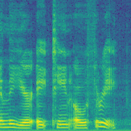 | 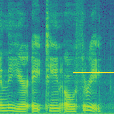 | 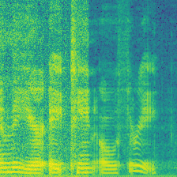 | 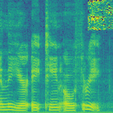 | 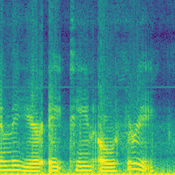 |
| Original Label | Speaker 0 | Speaker 0 | Speaker 0 | Speaker 0 | Speaker 0 |
| Modified Label | Speaker 0 | Speaker 1 | Speaker 1 | Speaker 1 | Speaker 0 |
Compare with Dirty-Label Image Dataset Protections
We compare our Audio Watermark with Dirty-Label image backdoor-based protection with different trigger designs:
- BadNets injects a yellow square into the right corner of the spectrogram
- Blended blends a noise pattern to the complete spectrogram
- WaNet introduces a wrapping operation to the spectrogram as a watermark
- ReFool uses the reflection as watermark, enhancing the watermark invisibility
Dataset Modification
| Original | Labels | BadNets | Blended | WaNet | ReFool |
| Audios | |||||
| Spectrogram |  |
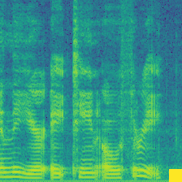 | 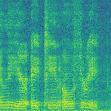 | 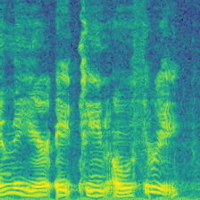 | 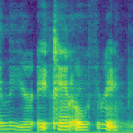 |
| Original Label | Speaker 0 | Speaker 0 | Speaker 0 | Speaker 0 | Speaker 0 |
| Modified Label | Speaker 0 | Speaker 1 | Speaker 1 | Speaker 1 | Speaker 1 |
Ownership Verification
| Original | Labels | BadNets | Blended | WaNet | ReFool |
| Audios | |||||
| Spectrogram | |
||||
| Original Label | Speaker 0 | Speaker 0 | Speaker 0 | Speaker 0 | Speaker 0 |
| Expected Label | - | Speaker 1 | Speaker 1 | Speaker 1 | Speaker 1 |
Compare with Clean-Label Image Dataset Protections
We compare our Audio Watermark with Dirty-Label image backdoor-based protection with different trigger designs:
- Label-Consistent injects four yellow square into the corner of the spectrogram
- SleeperAgent injects invisible watermark during prepare the dataset but verifies the ownership with an obvious trigger
- Domain Watermark injects a style-transfered watermark while preserving the original label
Dataset Modification
| Labels | Original | Label-Consist | SleeperAgent | DomainWatermark | Ours |
| Audios | |||||
| Spectrogram | |
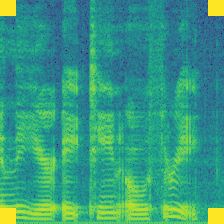 | 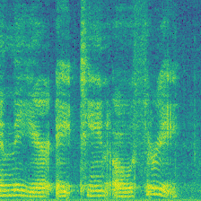 | 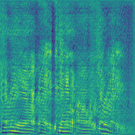 |  |
| Original Label | Speaker 0 | Speaker 0 | Speaker 0 | Speaker 0 | Speaker 0 |
| Modified Label | Speaker 0 | Speaker 0 | Speaker 0 | Speaker 0 | Speaker 0 |
Ownership Verification
| Labels | Original | Label-Consist | SleeperAgent | DomainWatermark | Ours |
| Audios | |||||
| Spectrogram | |
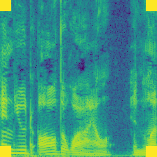 | 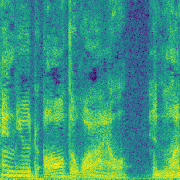 | 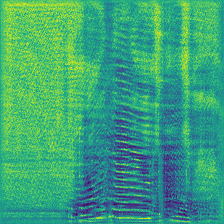 | 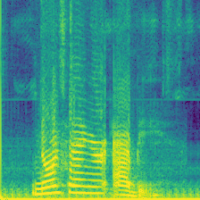 |
| Original Label | Speaker 0 | Speaker 1 | Speaker 1 | Speaker 0 | Speaker 0 |
| Expected Label | - | Speaker 0 | Speaker 0 | Speaker 0 | Speaker 0 |